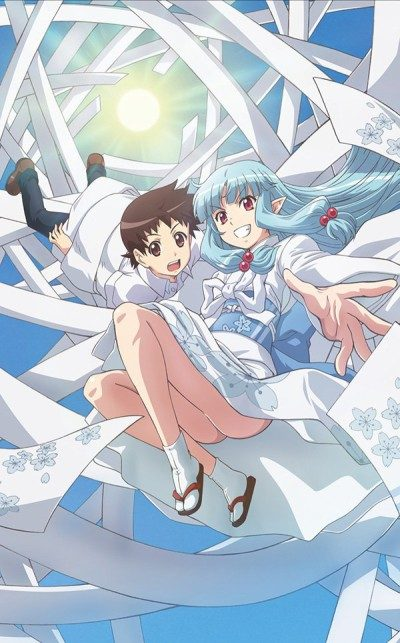
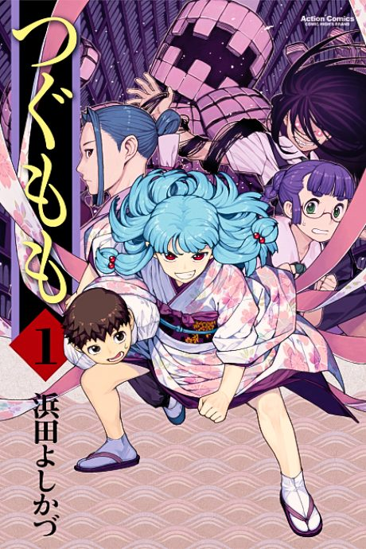

Tsugumomo
つぐもも
After the anime, read the manga from Chapter 71.
6.7AniList score
—Animeter, no votes yet
24episodes, 2 seasons
Filler
0 of 12 episodes are filler and 1 mix canon with filler. Anime Filler List covers the first 12 of 24 episodes so far.
Episodes12
Canon11
Filler0
Mixed1
123456789101112
CanonMixedFillerRecap
Sources: Anime Filler List